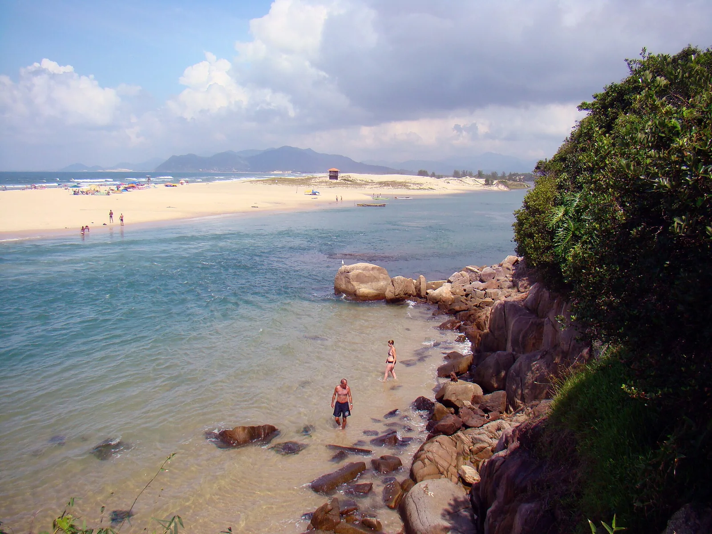

Guarda do Embaú
Santa Catarina, Brésil · surf, baignade

Plage du parc de la Serra do Tabuleiro qu’on rejoint en traversant le Rio da Madre à pied ou en barque. Les bancs de sable de l’embouchure y forment une vague réputée, l’une des plus connues de Santa Catarina.
- Lieu
- Santa Catarina, Brésil
- Niveau
- Intermédiaire
- Activités
- surf, baignade
- Type d'eau
- Mer / océan
- Coordonnées
- -27.91, -48.59 (position approximative du secteur)
Dangers à connaître
- Courant fort dans l’embouchure du Rio da Madre, surtout à marée descendante.
- Pic très fréquenté le week-end et en été.
Le conseil d'Ocean Buddy
Traverse la rivière à marée basse ou avec les barqueiros, et ne laisse rien de valeur sur le sable.
Ouvrir dans Ocean Buddy Télécharger sur l'App Store
Source : Fiche Ocean Buddy · septembre 2026 · à vérifier localement.